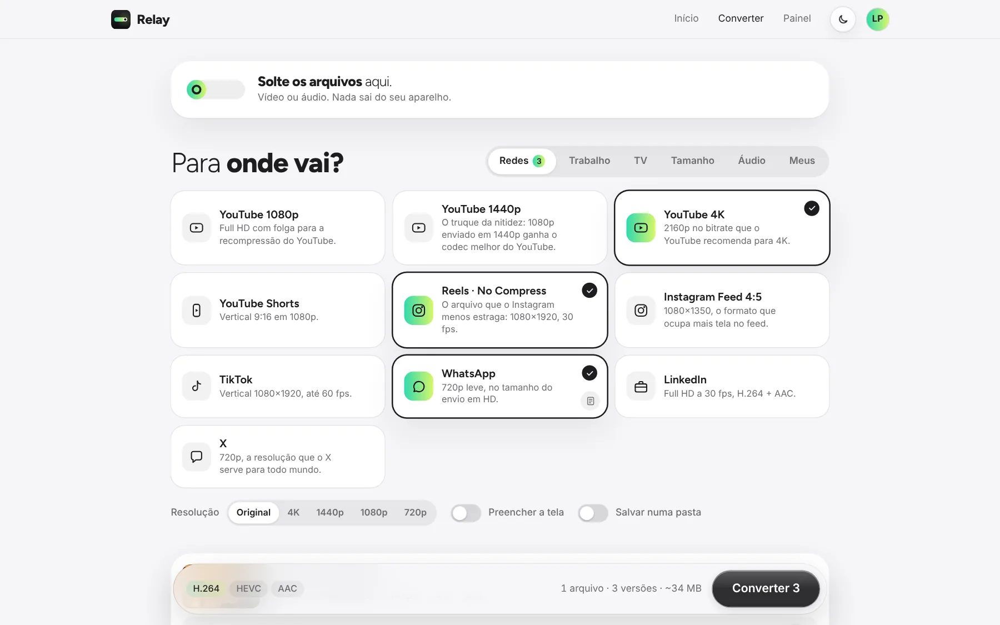
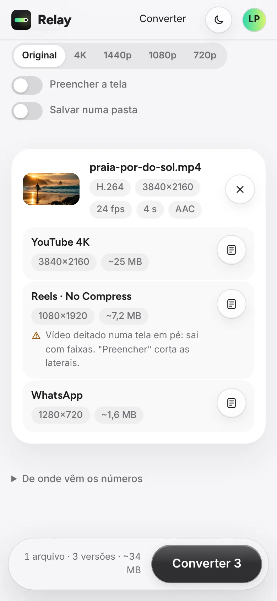
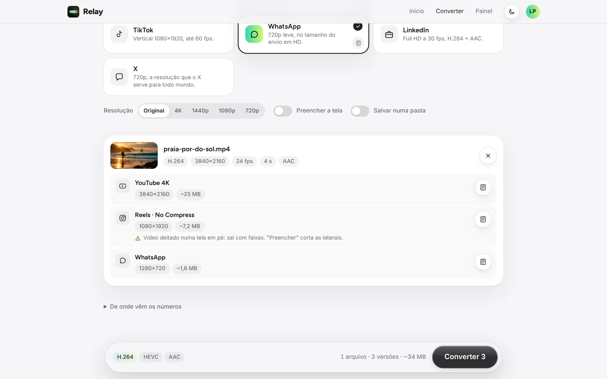
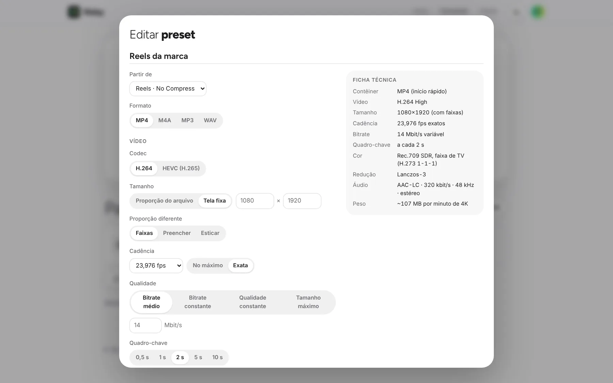
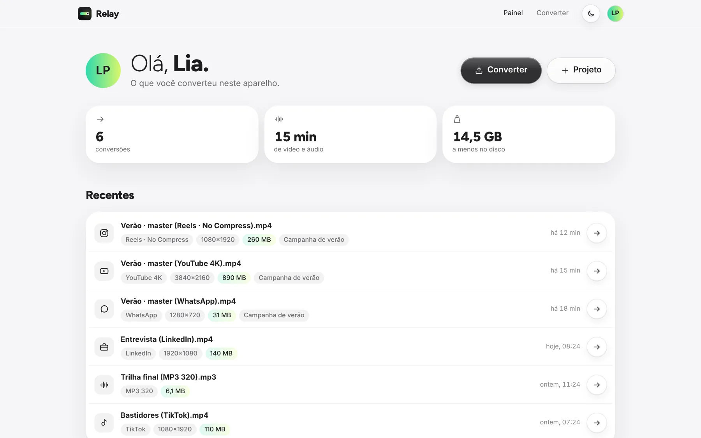
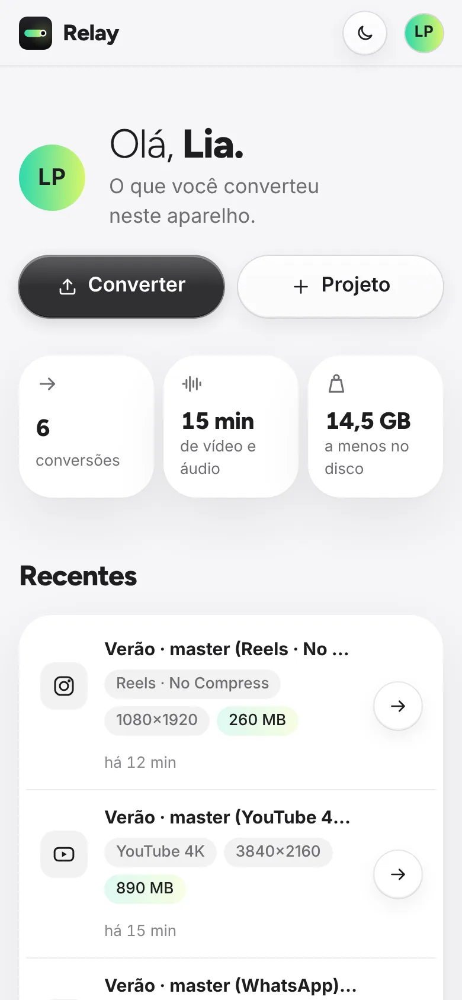

Tamanho exato
Cabe no limite.
Você diz os MB. Ele escolhe a resolução que fica nítida.
960×540
Master 4K de 2 min.
 Relay
Converter
Relay
Converter
Conversor de vídeo e áudio
O formato certo para cada destino, convertido no seu aparelho.


Experimente
Ferramentas
Cada preset com a fonte e a data de onde veio.
Um por vez, com o progresso no próprio relé.

Parta de um preset e mude o que quiser, com a ficha ao vivo.

Com a conta Absolute ZRO. Só nomes e números, nunca o arquivo.


Qualidade
Tamanho exato
Você diz os MB. Ele escolhe a resolução que fica nítida.
Master 4K de 2 min.
Redução nítida, na placa de vídeo.
BT.709 marcado. Igual em todo player.
Usa o codificador de vídeo que ele tem.
No Mac e no Windows, o app SOBEDESCE converte com o x264.
App do Relay: depoisLog da câmera para Rec.709 e o seu look .cube, em lote.
Destinos
Conta Absolute ZRO
Converter não pede conta. Com ela, vêm o painel, a equipe e o Set.
O Relay aparece onde você precisa exportar.